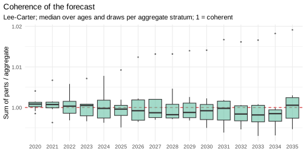
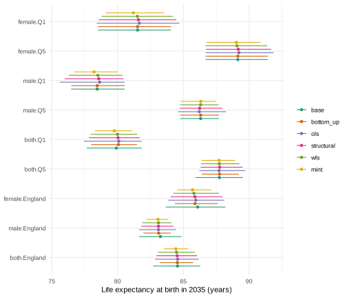

This vignette is precomputed
(dev/precompute-vignettes.R) because its backtests take a
few minutes.
Mortality forecasts are often needed at several levels: for groups (here sex by deprivation quintile), for their totals (each sex, each quintile) and for the whole population. Forecasts made separately for each level do not add up: the forecast deaths of England differ from the sum of the forecast deaths of its quintiles. mortensor offers two routes to coherent forecasts:
-
coherent by construction: forecast the bottom
series and sum them (
method = "bottom_up"), possibly with a joint model such asli_lee()that ties the bottom series together; -
reconciliation: forecast every node of the
hierarchy and adjust the forecasts so that they add up
(
"ols","structural","wls","mint").
This vignette shows what each method changes: the coherence, the forecasts of each level, their intervals and their accuracy in backtests.
Data and hierarchy
Deaths and mid-year populations in England by sex and IMD quintile,
2001-2019 (ons_data; Source: Office for National Statistics
licensed under the Open Government Licence v3.0):
x <- mt_data(deaths = ons_data, population = ons_data, by = c("sex", "imd_decile"), age = "age_group",
value = c(deaths = "all_causes", population = "population"))
x <- mt_as_exposure(x, type = "midyear")
x <- mt_group_levels(x, "imd_decile", function(d) paste0("Q", ceiling(as.numeric(d) / 2)), name = "quintile")The hierarchy crosses two aggregation layers: the quintiles add up to
England and the sexes to both sexes. mt_aggregate_strata()
adds the aggregate strata (deaths and exposures are summed):
h <- mt_hierarchy(sex = "both", quintile = list(total = "England"))
xa <- mt_aggregate_strata(x, h)
nodes <- mt_strata(xa, h)
nodes[, node := fifelse(level == "bottom", "sex x quintile",
fifelse(level == "total", "England",
fifelse(sex == "both", "quintile", "sex")))]
nodes[, .N, by = node]
#> node N
#> 1: sex x quintile 10
#> 2: sex 2
#> 3: quintile 5
#> 4: England 1Ten bottom series and eight aggregates: five quintiles (both sexes), two sexes (England) and the total.
Separate forecasts do not add up
Lee-Carter models fitted to each of the 18 strata and forecast to 2035:
fc_base <- mt_forecast(mt_fit(lee_carter(), xa), to = 2035, n_draws = 1000, seed = 1)Expected deaths (forecast rates times the exposures of 2019) of England against the sum of the ten bottom series, in 2035:
deaths_2035 <- function(fc) {
D <- mt_deaths(fc, noise = FALSE)
apply(D[, "2035", , , drop = FALSE], c(3, 4), sum)
}
D <- deaths_2035(fc_base)
bottom <- nodes[level == "bottom", label]
round(quantile(100 * (D["both.England", ] / colSums(D[bottom, ]) - 1), c(0.025, 0.5, 0.975)), 2)
#> 2.5% 50% 97.5%
#> -15.84 0.32 20.10The table gives quantiles of the difference in per cent over the
paths. In the median, the England model and the sum of its parts agree
within half a per cent. Path by path they differ by up to a fifth: the
model of England and the models of the quintiles draw their future
trends independently, so a path of England has no matching path of its
parts. Totals computed from the parts (for example their intervals) then
differ from the forecasts of the totals’ own model. Life expectancy
shows the same: the female England model forecasts about 0.2 years more
in 2035 than the sum of the female quintiles (table below,
base against bottom_up).
mt_coherence() and mt_plot_coherence()
summarise the ratio of the sum of the parts to each aggregate, per year:
the boxes show how the median ratios of the eight aggregates (over ages
and draws) spread around 1. The medians agree within 2%; single paths
disagree far more (table above), and mt_coherence() reports
their 2.5% and 97.5% quantiles.
mt_plot_coherence(fc_base, h)
The methods
All methods of mt_reconcile() and
reconciled() work draw by draw and age by age on expected
deaths. Bottom-up keeps the bottom forecasts and replaces the aggregates
by their sums. The other methods project the forecasts of all 18 strata
onto the coherent forecasts, with a weight matrix
that decides which strata absorb the adjustment (strata with large
weights move most):
| Method | Adjustment falls on | |
|---|---|---|
"bottom_up" |
(none) | the aggregates only |
"ols" |
identity | all strata equally, in deaths |
"structural" |
number of bottom series in each node | the aggregates, in proportion to their size in series |
"wls" |
variance of each stratum’s draws | the most uncertain strata |
"mint" |
covariance of the draws, shrunk to its diagonal | uncertain strata, using their correlation |
MinT follows Wickramasuriya et al. (2019), with the covariance of the forecast draws in place of in-sample residuals.
methods <- c("bottom_up", "ols", "structural", "wls", "mint")
rec <- lapply(setNames(methods, methods), function(m) mt_reconcile(fc_base, h, method = m, seed = 1))
rbindlist(lapply(names(rec), function(m) {
D <- deaths_2035(rec[[m]])
data.table(method = m, gap_after = signif(max(abs(D["both.England", ] / colSums(D[bottom, ]) - 1)), 2),
gap_before = round(rec[[m]]$reconciliation$max_relative_gap_before, 3))
}))
#> method gap_after gap_before
#> 1: bottom_up 2.2e-16 1.098
#> 2: ols 1.2e-12 1.098
#> 3: structural 2.2e-16 1.098
#> 4: wls 3.3e-16 1.098
#> 5: mint 2.2e-16 1.098After reconciliation every path adds up (gap_after is
zero up to rounding). gap_before is the largest relative
gap over all ages, years and aggregates of the base forecasts.
What reconciliation changes in the forecasts
Life expectancy at birth in 2035, by node and method. The base
forecasts ("base") are incoherent; all others are computed
from the same base draws, so the differences come from the
reconciliation alone:
all_fc <- c(list(base = fc_base), rec)
e0 <- rbindlist(lapply(names(all_fc), function(m) life_expectancy(all_fc[[m]])[period == 2035][, method := m]))
e0 <- merge(e0, nodes[, .(label, node)], by = "label")
e0[, method := factor(method, c("base", methods))]
dcast(e0[label %in% c("both.England", "female.England", "male.England", "both.Q1", "both.Q5", "female.Q1",
"male.Q5"), .(label, method, e0 = round(q0.5, 2))],
label ~ method, value.var = "e0")
#> label base bottom_up ols structural wls mint
#> 1: both.England 84.55 84.55 84.57 84.53 84.48 84.43
#> 2: both.Q1 79.91 80.06 80.10 80.04 79.99 79.75
#> 3: both.Q5 87.74 87.75 87.72 87.76 87.74 87.72
#> 4: female.England 86.09 85.89 85.95 85.88 85.80 85.70
#> 5: female.Q1 81.52 81.52 81.65 81.59 81.50 81.20
#> 6: male.England 83.25 83.13 83.11 83.11 83.11 83.08
#> 7: male.Q5 86.31 86.31 86.21 86.24 86.31 86.33
show <- c("female.Q1", "female.Q5", "male.Q1", "male.Q5", "both.Q1", "both.Q5", "female.England",
"male.England", "both.England")
ggplot(e0[label %in% show], aes(q0.5, factor(label, rev(show)), colour = method)) +
geom_pointrange(aes(xmin = q0.025, xmax = q0.975), position = position_dodge(width = 0.7), size = 0.2) +
scale_colour_mortensor(type = "categorical") +
labs(x = "Life expectancy at birth in 2035 (years)", y = NULL, colour = NULL) +
theme_mortensor(legend = "right")
How far each method moves the median and how it changes the width of the 95% interval, on average over the nodes of each type:
base <- e0[method == "base", .(label, med0 = q0.5, width0 = q0.975 - q0.025)]
chg <- merge(e0[method != "base"], base, by = "label")
chg[, .(shift_median = round(mean(abs(q0.5 - med0)), 3),
width_ratio = round(mean((q0.975 - q0.025) / width0), 2)), by = .(method, node)][
, dcast(.SD, method ~ node, value.var = c("shift_median", "width_ratio"))]
#> method shift_median_England shift_median_quintile shift_median_sex
#> 1: bottom_up 0.006 0.103 0.165
#> 2: ols 0.012 0.114 0.144
#> 3: structural 0.025 0.096 0.177
#> 4: wls 0.070 0.065 0.216
#> 5: mint 0.126 0.044 0.285
#> shift_median_sex x quintile width_ratio_England width_ratio_quintile
#> 1: 0.000 0.70 0.87
#> 2: 0.114 0.93 1.03
#> 3: 0.081 0.86 0.94
#> 4: 0.045 0.78 0.88
#> 5: 0.148 0.52 0.73
#> width_ratio_sex width_ratio_sex x quintile
#> 1: 0.68 1.00
#> 2: 0.90 1.18
#> 3: 0.81 1.09
#> 4: 0.73 1.01
#> 5: 0.54 0.86- Bottom-up leaves the ten bottom forecasts unchanged (shift 0, width ratio 1) and replaces the aggregates by sums, whose intervals are narrower than those of the aggregates’ own models.
- OLS moves bottom series and aggregates by similar amounts of deaths; the bottom intervals widen.
- Structural weights move the sexes and quintiles more than the bottom series.
- WLS moves the bottom series least among the projections.
- MinT moves every level and narrows every interval most (England to about half the width of its own model).
The intervals of England and of the two sexes narrow under every method: sums of strata whose paths are only partly dependent vary less than the aggregates’ own models.
Keeping a trusted total
Sometimes one node is trusted more than the others: an official
projection of the total population, or an all-cause forecast that the
causes of death must add up to. fixed keeps such nodes
unchanged in every draw (labels, or "total" for the grand
total); the projection gives them zero variance, so the other strata
absorb the whole gap. It works with every projection method:
rec_fixed <- mt_reconcile(fc_base, h, method = "wls", fixed = "total", seed = 1)
rec_fixed$reconciliation$max_relative_change_fixed
#> [1] 1.098298e-09
e0_fixed <- life_expectancy(rec_fixed)[period == 2035][, method := "wls, England fixed"]
dcast(rbind(e0[method %in% c("base", "wls")], e0_fixed, fill = TRUE)[
label %in% c("both.England", "female.England", "male.England", "female.Q1", "male.Q5"),
.(label, method, e0 = round(q0.5, 2))], label ~ method, value.var = "e0")
#> label base wls wls, England fixed
#> 1: both.England 84.55 84.48 84.55
#> 2: female.England 86.09 85.80 85.88
#> 3: female.Q1 81.52 81.50 81.65
#> 4: male.England 83.25 83.11 83.12
#> 5: male.Q5 86.31 86.31 86.24England keeps the life expectancy of its own model (column
base), and the sexes and quintiles move towards it. In the
backtest below ("wls, England fixed"), England keeps the
expected rates of its own model, but its predictive draws add up the
observation noise of the bottom series, so its scores differ from those
of its own model (CRPS 0.0452 against 0.0440). The quintiles and the
bottom series absorb the trend of England and become less accurate than
with plain WLS (bottom series 0.0694 against 0.0677): here the total was
not better informed than its parts.
What reconciliation changes in accuracy
The same comparison in a rolling-origin backtest, with the
reconciliation inside each fit (reconciled()), so that
every origin is reconciled on its own training data. A joint Li-Lee
model with bottom-up aggregation is added as a model that is coherent by
construction:
specs <- c(list(base = lee_carter()),
setNames(lapply(methods, function(m) reconciled(lee_carter(), h, method = m)), methods),
list("wls, England fixed" = reconciled(lee_carter(), h, method = "wls", fixed = "total"),
"Li-Lee, bottom_up" = reconciled(li_lee(common_by = "sex"), h, method = "bottom_up"),
"Ensemble, bottom_up" = reconciled(ensemble(ll = li_lee(common_by = "sex"),
rw = rwd(observation_noise = TRUE)),
h, method = "bottom_up")))
bt <- rbindlist(lapply(names(specs), function(n) {
b <- mt_backtest(specs[[n]], xa, origins = 2008:2014, h = 5, n_draws = 200)
b[, method := n]
}))
bt <- merge(bt, nodes[, .(label, node)], by = "label")
bt[, method := factor(method, names(specs))]
dcast(bt[, .(crps = round(mean(crps), 4)), by = .(method, node)], method ~ node, value.var = "crps")
#> method England quintile sex sex x quintile
#> 1: base 0.0440 0.0577 0.0467 0.0677
#> 2: bottom_up 0.0455 0.0593 0.0483 0.0677
#> 3: ols 0.0449 0.0597 0.0483 0.0683
#> 4: structural 0.0449 0.0593 0.0480 0.0678
#> 5: wls 0.0451 0.0591 0.0481 0.0677
#> 6: mint 0.0458 0.0592 0.0484 0.0676
#> 7: wls, England fixed 0.0452 0.0602 0.0491 0.0694
#> 8: Li-Lee, bottom_up 0.0481 0.0574 0.0500 0.0665
#> 9: Ensemble, bottom_up 0.0465 0.0574 0.0503 0.0666
dcast(bt[, .(cov95 = round(mean(cov95), 3)), by = .(method, node)], method ~ node, value.var = "cov95")
#> method England quintile sex sex x quintile
#> 1: base 0.734 0.825 0.775 0.832
#> 2: bottom_up 0.601 0.707 0.682 0.831
#> 3: ols 0.640 0.747 0.719 0.864
#> 4: structural 0.620 0.730 0.700 0.847
#> 5: wls 0.616 0.709 0.686 0.833
#> 6: mint 0.570 0.677 0.650 0.801
#> 7: wls, England fixed 0.651 0.743 0.704 0.848
#> 8: Li-Lee, bottom_up 0.666 0.756 0.786 0.845
#> 9: Ensemble, bottom_up 0.683 0.806 0.754 0.896Reconciliation leaves the accuracy of the bottom series almost unchanged and makes the aggregates slightly less accurate than their own models (England: CRPS 0.0449 to 0.0458 against 0.0440). Their coverage drops more, for England from 0.73 to between 0.57 and 0.64. On these data the aggregates are large populations, and their own models capture common movements of the quintiles (such as the slowdown after 2011) in their trends; sums of bottom forecasts carry such movements only as far as the dependence between the strata is reproduced. Li-Lee and the ensemble, aggregated bottom-up, give the most accurate forecasts of the bottom series and the quintiles, and the ensemble the best coverage of the bottom series (0.90) and, among the coherent forecasts, of the quintiles (0.81) and England (0.68). Here coherence costs a little accuracy and some coverage of the totals. In hierarchies with noisy bottom series (small regions, rare causes) the balance can differ; the regional vignette shows such a case.
Dependence between strata
Bottom-up sums of separately fitted models are only as wide as the
dependence between the strata allows. Independent draws cancel in the
sum, so the intervals of the totals are too narrow. By default,
reconciled() reorders the draws of separately fitted strata
so that they move together as the strata did in the training years (an
empirical copula, dependence = "empirical"):
dep <- list(empirical = reconciled(lee_carter(), h, method = "bottom_up"),
none = reconciled(lee_carter(), h, method = "bottom_up", dependence = "none"))
bd <- rbindlist(lapply(names(dep), function(n) {
b <- mt_backtest(dep[[n]], xa, origins = 2008:2014, h = 5, n_draws = 200)
b[, dependence := n]
}))
bd <- merge(bd, nodes[, .(label, node)], by = "label")
dcast(bd[, .(cov95 = round(mean(cov95), 3)), by = .(dependence, node)], dependence ~ node, value.var = "cov95")
#> dependence England quintile sex sex x quintile
#> 1: empirical 0.601 0.707 0.682 0.831
#> 2: none 0.461 0.744 0.596 0.829Without the reordering, the 95% coverage of England falls from 0.60 to 0.46 and that of the sexes from 0.68 to 0.60; the quintiles (sums of two strata) change little. The reordering restores part of the dependence; the remaining under-coverage of the totals favours joint models or mixtures for the bottom series.
Choosing a method
- Bottom-up with a joint model or a mixture of the bottom series gave the most accurate forecasts of the bottom series and the quintiles here, and keeps the detailed forecasts as they are; the totals by sex and for England were less accurate than with the projections.
- Among the projections, WLS and structural weights keep the bottom series closest to their models; OLS treats a change of one death equally in all strata and widens the intervals of small strata.
- MinT gives the narrowest intervals; check that they still cover the observations (here they covered least).
-
fixedkeeps a node that is trusted more than the others (an official total, an all-cause forecast) and lets the rest of the hierarchy adapt. - Check the choice in a backtest at every level of the hierarchy, as above. When the totals are well estimated by their own models, report how much coherence changes them. The vignette “Coherent forecasts by sex, region and cause” compares the methods for the 16 German Laender, where small Laender make the differences larger.
References
Wickramasuriya SL, Athanasopoulos G, Hyndman RJ (2019). Optimal forecast reconciliation for hierarchical and grouped time series through trace minimization. Journal of the American Statistical Association 114(526): 804-819.
Clark M, Gangopadhyay S, Hay L, Rajagopalan B, Wilby R (2004). The Schaake shuffle: a method for reconstructing space-time variability in forecasted precipitation and temperature fields. Journal of Hydrometeorology 5(1): 243-262.